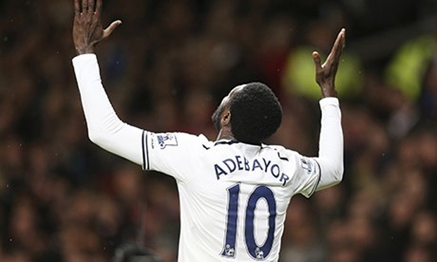

Emanuel Adebayor: 13 Alasan Mengapa Saya Memilih Islam
Beberapa bulan terakhir, berita tentang masuk Islamnya seorang atlet sepak bola internasional terdengar cukup ramai berseliweran di dunia maya. Ya, seorang pemain internasional asal Togo, Sheyi Emmanuel Adebayor, mengumumkan bahwa ia telah memeluk Islam. Ia telah meninggalkan keyakinan Kristennya dan memilih Islam sebagai jalan hidup. Jalan kebenaran yang ia yakini.
Menariknya, ia juga menyebutkan beberapa alasan mengapa ia memilih Islam dan meninggalkan Kristen. Tentu ini menunjukkan, Adebayor melakukan pengkajian, membandingkan, dan merenungkan sehingga sampai pada kesimpulan bahwa Islam adalah satu-satunya agama yang benar. Bukan sekedar ikut-ikutan dan emosional saja.
Berikut ini alasan Adebayor memeluk Islam sebagaimana dirilis oleh theheraldng.com. Pesepakbola yang pernah bermain untuk klub-klub sepak bola top Eropa: Arsenal, Manchester City, Real Madrid, dan kini Tottenham Hotspurs ini mengatakan,
“Aku punya 13 alasan yang kuat mengapa seorang muslim itu sama seperti Yesus dan mereka lebih mengikuti Yesus daripada orang-orang Kristen:
Pertama, Yesus mengajarkan bahwa hanya ada satu Tuhan. Hanya satu Tuhan saja yang berhak untuk disembah. Hal itu termaktub dalam Deut 6:4, Mark 12:29. Umat Islam juga meyakini demikian. Sebagaimana diajarkan Alquran dalam surat 4 (An-Nisa) ayat 171.
Kedua, Yesus tidak makan daging babi. Dijelaskan dalam Leviticus 11:7. Sama dengan yang dilakukan umat Islam. Dan hal itu dijelaskan Alquran dalam surat 6 (Al-An’am) ayat 145.
Ketiga, Yesus mengucapkan salam dengan kalimat “assalamu’alaikum” (kedamaian selalu bersamamu). Terdapat dalam John 20:21. Muslim juga mengucapkan salam dengan cara demikian.
Keempat, Yesus selalu mengucapkan “God Willing” (insya Allah). Umat Islam mengucapkan kalimat ini juga sebelum mereka melakukan apapun. Sebagaimana dituntunkan dalam Alquran surat 18 (Al-Kahfi) ayat 23-24.
Kelima, Yesus mencuci wajah, kedua tangan, dan kedua kakinya sebelum shalat. Hal yang sama juga dilakukan oleh seorang muslim.
Keenam, Yesus dan nabi-nabi lainnya yang terdapat di dalam Injil shalat dengan meletakkan kepala mereka di tanah. Dijelaskan dalam Matthew 26:39. Muslim juga melakukan demikian. Sebagaimana diajarkan Alquran dalam surta 3 (Ali Imran) ayat 43.
Ketujuh, Yesus memiliki janggut dan memakai throbe (gamis). Hal ini disunnahkan bagi seorang muslim.
Kedelapan, Yesus mengikuti syariat (syariatnya tauhid sama seperti nabi-nabi sebelumnya pen.) dan mengimani semua nabi. Lihat Matther 5:17. Muslim juga diajarkan demikian oleh Alquran. Lihatlah surat 3 (Ali Imran) ayat 84 dan 2 (Al-Baqarah) 285.
Kesembilan, Ibu Yesus, Maryam, mengenakan pakaian yang menutupi seluruh tubuhnya dan mengenakan hijab. Sebagaimana terdapat dalam 1 Timothy 2:9, Genesis 24: 64-65, dan Corinthians 11:6. Wanita muslimah juga mengenakan pakaian yang sama. Alquran mengajarkan mereka dalam surat 33 (Al-Ahzab) ayat 59.
Kesepuluh, Yesus dan nabi-nabi lainnya yang disebutkan di dalam Injil berpuasa hingga lebih dari 40 hari. Lihat Exodus 34:28, Daniel 10:2-6. 1Kings 19:8 dan Matthew 4:1. Muslim pun berpuasa selama bulan Ramadhan. Seorang muslim diwajibkan berpuasa sebulan penuh, 30 hari. Lihat Alquran surat 2 (Al-Baqarah) ayat 183. Kemudian dianjurkan untuk melanjutkan berpuasa 6 hari untuk menambah ganjaran pahala.
Kesebelas, Yesus mengajarkan agar berucap “Kedamaian untuk rumah ini” ketika memasuki rumah. Lihat Luke 10:5. Dan juga memberi salam kepada orang-orang di dalam rumah dengan ucapan “Kedamaian untuk kalian”. Sekali lagi, muslim melakukan hal yang sama persis dengan apa yang dilakukan dan diajarkan Yesus. Ketika kita masuk ke rumah kita, atau rumah orang lain, kita mengucapkan “Bismillah” dan juga memberi salam “assalamualaikum”. Inilah tuntunan Alquran dalam surat 24 (An-Nur) ayat 61.
Kedua belas, Yesus dikhitan (disunat). Khitan merupakan salah satu dari 5 sunnah fitrah dalam ajaran Islam. Dalam Islam, seorang laki-laki diwajibkan untuk berkhitan. Berdasarkan Injil Luke 2:21. Yesus berusia 8 hari saat ia dikhitan. Di dalam Taurat, Allah berfirman kepada Nabi Ibrahim bahwa khitan adalah sebuah “perjanjian abadi”. Lihat Genesis 17:13. Di dalam Alquran, surat 16 (An-Nahl) ayat 123, seorang muslim diwajibkan untuk mengikuti agama Nabi Ibrahim. Nabi Muhammad ﷺ bersabda, “Ibrahim berkhitan setelah berumur delapan puluh tahun” (HR. Bukhari, Muslim, dan Ahmad).
Ketiga belas, Yesus berbicara dalam bahasa Aramaik dan menyebut Tuhan dengan Elah. Secara penyebutan atau pelafalan, sama dengan lafadz Allah. Aramaik adalah bahasa kuno. Ia merupakan bahasa Bible. Bahasa ini merupakan salah satu dari Bahasa Semit. Termasuk juga bahasa Hebrew (Ibrani), Arab, Ethiopia, dan bahasa-bahasa kuno lainnya seperti bahasa Assyria dan Babylonia yang merupakan Bahasa orang-orang Akkadia.
Bahasa Aramaik “Elah” dan bahasa Arab “Allah” adalah sama.
Kata Aramaik “Elah” berasal dari bahasa Arab “Allah”. Yang artinya adalah Tuhan. Allah dalam bahasa Arab artinya juga Tuhan. Tuhan Yang Mahatinggi. Anda bisa dengan mudah mendapatkan kesamaan pelafalannya. Dengan demikian, Tuhannya Yesus juga merupakan Tuhannya orang-orang Islam. Dialah Tuhan semua manusia. Dan Tuhan semua makhluk yang ada.

Nah, sekarang katakan kepadaku, siapakah pengikut Yesus yang sebenarnya? Tentu saja jawabnya umat Islam. Sekarang saya yakin saya telah menjadi pengikut Yesus yang sebenarnya”. Tutup Adebayor.
Penutup
Kajian yang dilakukan Adebayor benar-benar menunjukkan bahwa yang benar itu jelas dan yang menyimpang itu juga telah jelas. Oleh karena itu, benarlah apa yang Allah firmankan,
وَمَنْ يَبْتَغِ غَيْرَ الْإِسْلَامِ دِينًا فَلَنْ يُقْبَلَ مِنْهُ وَهُوَ فِي الْآخِرَةِ مِنَ الْخَاسِرِينَ
“Barangsiapa mencari agama selain agama Islam, maka sekali-kali tidaklah akan diterima (agama itu)daripadanya, dan dia di akhirat termasuk orang-orang yang rugi.” (QS:Ali Imran | Ayat: 85).
Rugilah mereka yang memilih agama selain Islam. Apalagi menukarnya dengan yang selainnya.
Sumber: theheraldng.com